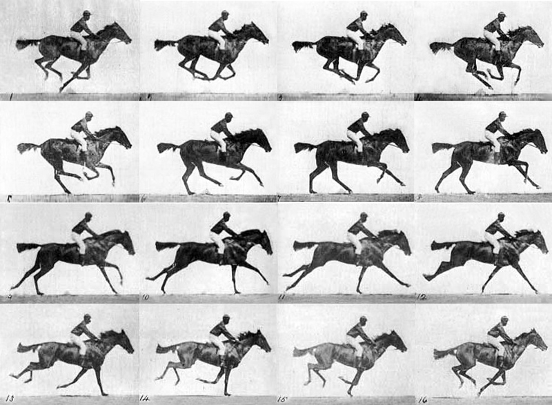
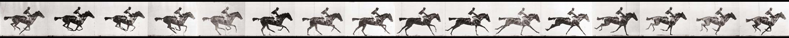

Designing, Defining and Triggering CSS3 Animations without Custom Libraries
Name of the animation: A name that describes the animation
Stages of the animation: Each stage of the animation is represented as a percentage. 0% represents the beginning state of the animation. 100% represents the ending state of the animation. Multiple intermediate states can be added in between.
CSS Properties: The CSS properties defined for each stage of the animation timeline.
From and To Stage
@keyframes [name] {
from {
[style]
}
to {
[style]
}
}
Percentage Stage
@keyframes [name] {
0% {
[style]
}
50% {
[style]
}
100% {
[style]
}
}
.element_name {
animation-name: [name]
animation-duration:
how long an animation should take to complete one cycle
animation-timing-function: [ease, linear, ease-in, ease-out, ease-in-out]
Speed Curve
Set your ounr [cubic-bezier(n,n,n,n)]
animation-delay: [delay for the start]
animation-iteration-count: [Xs, Xms, infinite]
How Many Times an Animation Should Run
animation-direction: [normal, reverse, alternate, alternate-reverse];
animation-fill-mode: [none, forwards, backwards, both ];
When the animation is not playing
animation-play-state: [running or paused];
/* short hand - with set order */
animation: [name] [duration] [timing-function] [delay]
[iteration-count] [direction] [fill-mode] [play-state];
}

Famous photographic work, pioneering the study of motion. Race horse galloping by Eadweard Muybridge.
#animation {
width: 200px; /*divide width by frames */
height: 146px; /*divide height by stacks */
background-image: url("images/race-horse-by-muybridge.jpg");
animation: playX-axis .25s steps(4) infinite, /* set number of frames across */
playY-axis 1s steps(4) infinite; /* set number of rows stacked */
}
@keyframes playX-axis {
from {background-position-x: 0px;}
to {background-position-x: -800px;} /* width of image */
}
@keyframes playY-axis {
from {background-position-y: 0px;}
to {background-position-y: -587px;} /* height of image */
}

Muybridge's image made into a filmstrip
#animation2 {
width: 138px;
height: 109px;
background-image : url("images/race-horse-filmstrip-muybridge.jpg");
animation: moveX-axis 1s steps(16) infinite;
}
@keyframes moveX-axis {
from {background-position-x:0px;}
to {background-position-x:-2195px;} /* width of image */
}
var toggler = document.querySelector('button');
toggler.addEventListener('click', function (event) {
if (toggler.textContent != 'Start Animation!') {
toggler.textContent = 'Start Animation!';
document.getElementById('animation2').style.animationPlayState = 'paused';
} else {
toggler.textContent = 'Stop Animation!';
document.getElementById('animation2').style.animationPlayState = 'running';
}
}, false)